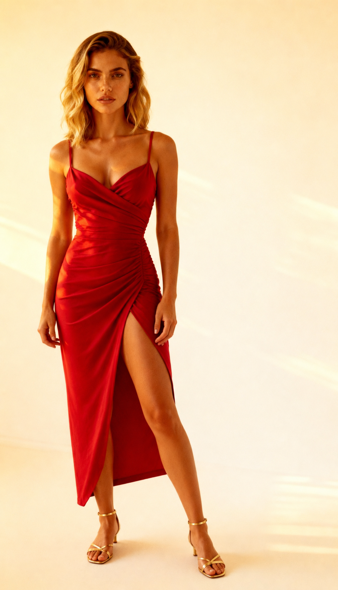

Úrsula Varga
Modelo & Especialista em Ensaios com IA
"Transformando criatividade em imagens extraordinárias com Inteligência Artificial."

Modelo & Especialista em Ensaios com IA
"Transformando criatividade em imagens extraordinárias com Inteligência Artificial."